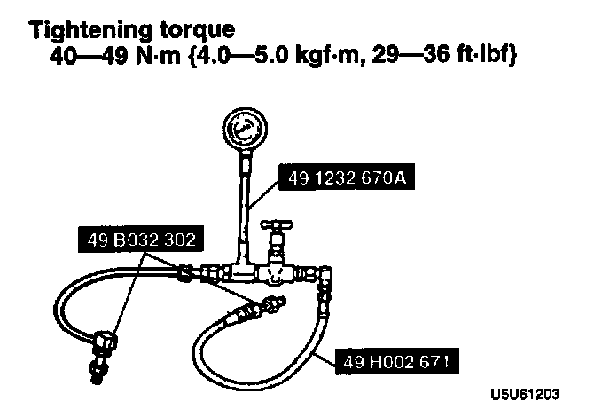
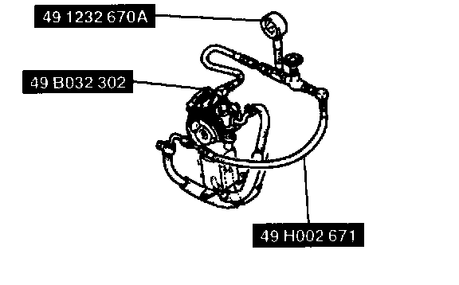
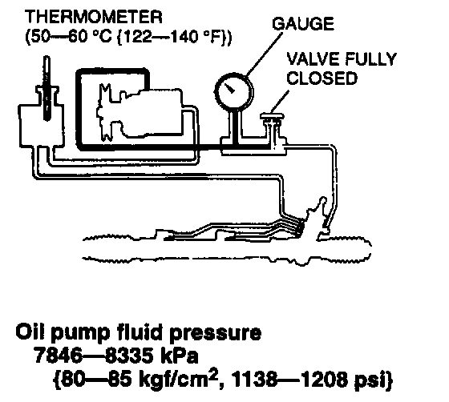
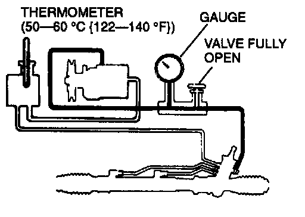

Power Steering Pump: Testing and Inspection
FLUID PRESSURE INSPECTION
1. Assemble the SSTs as shown in the figure.
Tightening torque 40-49 Nm (4.0-5.0 kg-m, 29-36 ft. lbs.)
2. Mark both hose connections to ensure that the hose is reinstalled in its original position.

3. Disconnect the pressure hose from the oil pump. Attach the SSTs.
4. Bleed the air from the system.
5. Open the gauge valve fully. Start the engine and turn the steering wheel fully left and right to raise the fluid temperature to 50-60°C (122-140°F).
Caution:
- Do not let the valve stay closed for more than 5 seconds. The increase in fluid temperature will damage the oil pump.

6. Close the gauge valve completely. Increase the engine speed to 1,000-1,500 rpm and measure the fluid pressure generated by the oil pump. If the pressure is not within specification, replace the oil pump component.
Oil pump fluid pressure 7846-8335 kPa (80-85 kgf/cm2, 1138-1208 psi)

7. Open the gauge valve fully and increase the engine speed to 1.000-1.500 rpm.
Caution:
- Never hold the steering wheel to the extreme left or right for more than five seconds with the engine running. This could damage the power steering pump.
8. Turn the steering wheel fully to the left and right and measure the fluid pressure generated by the gear housing. If the pressure is not within specification, replace the gear housing component.
Gear housing fluid pressure 7846-8335 kPa (80-85 kg-cm2, 1138-1208 psi)
9. Remove the gauge set. Install and tighten the pressure hose to the specified torque.
Tightening torque 32-47 Nm (3.2-4.8 kg-m, 24-34 ft. lbs.)
10. Bleed the air from the system.